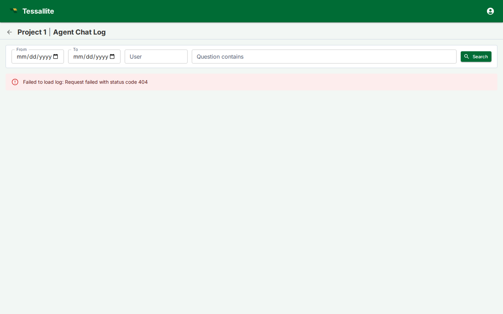

Agent log screen
What this covers

The agent log screen is a full-trace audit viewer for every conversational agent turn in a project. It lets tenant administrators and project modellers inspect what happened during any agent interaction: the user's question, the LLM's reasoning, the queries it chose, the answers it produced, how the judge evaluated those answers, and how tokens were spent. This article explains the purpose of the log screen, how to enable it, how to read the trace data, and how to use it effectively for quality assurance and troubleshooting.
Why the log screen exists
The conversational agent sits between users and the data layer. When an answer is wrong, slow, or refused, someone needs to understand why. The chat interface shows the outcome, but not the machinery behind it. The log screen exposes that machinery: every decision the agent made, every query it ran, every judgement it received.
Without the log screen, troubleshooting an incorrect answer requires reading backend service logs, correlating timestamps, and piecing together fragments. The log screen puts the full trace in one table, filterable and expandable, accessible from a browser.
Common use cases:
- Answer quality review. After enabling the agent for a new team, a modeller reviews the first week of turns to check whether the agent is interpreting questions correctly and choosing the right measures and dimensions.
- Judge calibration. An administrator examines turns where the judge verdict is "fail" or "warn" to decide whether the rubric is too strict, too lenient, or missing a case.
- Token cost investigation. A spike in the cost dashboard prompts a look at recent turns to find which questions are consuming disproportionate tokens.
- User support. A user reports that the agent gave a surprising answer. An administrator searches for the question, opens the trace, and reads the thought process and physical SQL to determine what happened.
Enabling the log screen
The log screen is controlled by a project-level toggle.
- Open Tenant Administration and select the project.
- Click the gear icon to open the project configuration drawer.
- Navigate to Setup under the Conversational Agent section.
- The "Enable conversational agent" toggle must be on. Below it, toggle Agent log screen enabled.
- Click Save.
After saving and closing the configuration drawer, a history icon appears in the project header bar, next to the chat icon. Clicking it opens the log screen in a new browser tab.
The toggle is independent of other agent settings. Disabling the log screen does not delete any trace data; it only hides the entry point. Re-enabling it restores access to all existing turns.
Reading the log table
The log screen opens to a table of agent turns, ordered by conversation (most recently active first) and then by turn position within each conversation. Each row shows one question-and-answer cycle.
Summary columns
| Column | What it shows |
|---|---|
| Timestamp | When the turn was created. |
| User | The identity of the person who asked the question. |
| Question | The user's message, truncated to fit the row. |
| Status | Whether the turn completed normally (ok), was refused by a guardrail (refused), or failed (error). |
| Verdict | The judge's evaluation: pass, warn, fail, or blank if no judge was configured. |
| Route | How the query was served: from an aggregate, from the base table, or via a recipe. |
| Rows | How many data rows the query returned. |
| Tokens | Input and output token counts for the LLM calls in this turn. |
| Latency | Wall-clock time from question to answer. |
Expanding a row
Click any row to expand it. The expanded view is split into two columns.
Left column — the agent's work:
- Prompt sent to LLM. The full payload sent to the language model: the system prompt (containing model context, glossary, conversation history, and tool spec) and the user message. This is the complete input the LLM received, useful for diagnosing why the LLM made a particular choice.
- Raw LLM response. The unprocessed text the language model returned before it was parsed into a tool call. Inspecting this reveals whether the LLM produced a valid tool call, hallucinated a function name, or returned free-form text that the parser could not interpret.
- Thought process. The LLM's internal reasoning about what the question is asking and how to answer it.
- LLM plan. The structured plan the LLM produced: which model to query, which measures and dimensions, which filters.
- Semantic query. The abstract query expressed in business terms before it was translated to physical SQL.
- Physical SQL. The actual SQL statement that ran against the source or aggregate table.
- Answer. The prose answer the agent returned to the user.
Right column — evaluation and feedback:
- Citations. The measures and dimensions the answer references, with their values.
- Judge reasoning. The judge LLM's explanation of its verdict.
- Judge metrics. Numerical scores the judge assigned (relevance, accuracy, completeness, or whatever the rubric defines).
- Guardrail actions. Any safety-policy or content-rule actions that fired during the turn.
- User feedback. Thumbs-up/down votes and comments left by the user, if feedback is enabled.
Using the filters
The filter bar at the top of the screen narrows the table to specific turns.
- From / To. Date range. Both are inclusive. Useful for reviewing a specific period after a model change or a new rubric deployment.
- User. Filters by the caller's identity. Use this to review one person's experience or to find turns from a specific API caller.
- Question contains. Free-text substring search against the user's message. Use this to find turns about a specific metric or topic.
- Search button. Applies the filters. The record count updates to show how many turns match.
Filters are combined with AND logic. Pagination resets to page one after each search.
Best practices
Review early and often. The first few days after enabling the agent for a new audience are the most valuable time to use the log screen. Patterns of misinterpretation surface quickly: the agent may map a common business term to the wrong dimension, or choose an aggregate that does not cover the requested grain.
Use the judge verdict as a triage signal. Sort your attention by verdict. Turns with "fail" need investigation. Turns with "warn" need a judgment call — is the rubric too conservative, or is the answer genuinely borderline? Turns with "pass" still deserve a spot check, because a rubric can have blind spots.
Compare the semantic query to the physical SQL. When the answer is wrong, the gap between intent and execution is usually visible here. If the semantic query looks correct but the physical SQL is wrong, the problem is in the query rewriting layer or in a stale aggregate. If the semantic query is wrong, the problem is in how the LLM interpreted the question — check the glossary, the model context, or the example questions.
Watch token usage patterns. High token counts on simple questions may indicate that the model context is too verbose, that the LLM is over-reasoning, or that the rubric is prompting excessive judge output. The log screen makes these patterns visible without needing to query the cost API.
Combine with the judge rubric. The log screen shows what the judge scored; the rubric controls how it scores. If the log screen reveals that the judge is consistently failing turns that a human would pass, the rubric needs revision. If the judge is passing turns that look wrong, the rubric is missing a criterion.